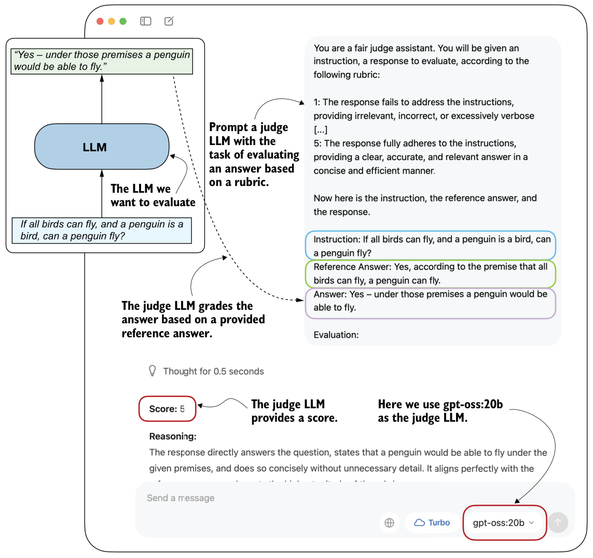

F.5Judging responses with other LLMs
In the early days, LLMs were evaluated using statistical and heuristics-based methods, including a measure called BLEU, which crudely measures how well generated text matches reference text. The problem with such metrics is that they require exact word matches and don’t account for synonyms, word substitutions, and so on.
One solution to this problem, if we want to judge the written answer text as a whole, is to use relative rankings and leaderboard-based approaches, as discussed in the previous section. But a downside of leaderboards is the subjective nature of preference-based comparisons because they involve human feedback, and there are the challenges of collecting that feedback.
A related method is to use another LLM with a predefined grading rubric (that is, an evaluation guide) to compare an LLM’s response with a reference response and judge the response quality based on that rubric, as illustrated in figure F.6.

In practice, the judge-based approach shown in figure F.6 works well when the judge LLM is strong. Common setups use leading proprietary LLMs via API, though specialized judge models also exist (see appendix A for references). One reason judges work so well is that evaluating an answer is often easier than generating one.
To implement a judge-based model evaluation programmatically in Python, we could load one of the Qwen3 models (discussed in appendix D) and prompt it with a grading rubric and the model answer we want to evaluate. Alternatively, we can use other LLMs through an API, such as the ChatGPT or Ollama API.
In the remainder of this section, we’ll implement the judge-based evaluation shown in figure F.6 using the Ollama API in Python. Specifically, we will use the 20-billion-parameter gpt-oss open-weight model by OpenAI because it offers a good balance between capability and efficiency. For more information about gpt-oss, please see my “From GPT-2 to gpt-oss: Analyzing the Architectural Advances” article at https://magazine.sebastianraschka.com/p/from-gpt-2-to-gpt-oss-analyzing-the.
F.5.1Implementing the LLM-as-a-judge approach in Ollama
Ollama (https://ollama.com) is an efficient open source application for running LLMs on a laptop. It serves as a wrapper around the open source llama.cpp library (https://github.com/ggerganov/llama.cpp), which implements LLMs in pure C/C++ for maximum efficiency. However, Ollama is only a tool for generating text with LLMs (inference); it does not support training or fine-tuning LLMs.
To execute the following code, install Ollama by visiting https://ollama.com and follow the instructions for your operating system:
- For macOS and Windows users: Open the downloaded Ollama application. If prompted to install command-line support, select “Yes.”
- For Linux users: Use the installation command available on the Ollama website.
Before implementing the model evaluation code, let’s first download the gpt-oss model and verify that Ollama is functioning correctly from the command-line terminal. Execute the following command on the command line (not in a Python session):
ollama run gpt-oss:20bThe first time you execute this command, the 20-billion-parameter gpt-oss model, which takes up 14 GB of storage space, will automatically be downloaded. The output is as follows:
$ ollama run gpt-oss:20b
pulling manifest
pulling b112e727c6f1: 100% ▕██████████████████████▏ 13 GB
pulling fa6710a93d78: 100% ▕██████████████████████▏ 7.2 KB
pulling f60356777647: 100% ▕██████████████████████▏ 11 KB
pulling d8ba2f9a17b3: 100% ▕██████████████████████▏ 18 B
pulling 55c108d8e936: 100% ▕██████████████████████▏ 489 B
verifying sha256 digest
writing manifest
removing unused layers
successAlternative Ollama models
gpt-oss:20b in the ollama run gpt-oss:20b command refers to the 20-billion-parameter gpt-oss model. Using Ollama with the gpt-oss:20b model requires approximately 13 GB of RAM. If your machine does not have enough RAM, you can try a smaller model, such as the 4-billion-parameter qwen3:4b model via ollama run qwen3:4b, which requires only around 4 GB of RAM. For more powerful computers, you can also use the larger 120-billion-parameter gpt-oss model by replacing gpt-oss:20b with gpt-oss:120b. But keep in mind that this model requires significantly more computational resources.Once the model download is complete, you will be presented with a command-line interface that allows you to interact with the model. For example, try asking the model,
"What is 1+2?":
>>> What is 1+2?
Thinking...
User asks: "What is 1+2?" This is simple: answer 3. Provide explanation?
Possibly ask for simple
arithmetic. Provide answer: 3.
...done thinking.
1 + 2 = **3**You can end this Ollama session using the input /bye.
In the remainder of this section, we’ll use the Ollama API. This approach requires that Ollama is running in the background. There are three options for doing this:
- Run the
ollamaservecommand in the terminal (recommended). This runs the Ollama backend as a server, usually onhttp: //localhost: 11434. Note that it doesn’t load a model until it’s called through the API (later in this section).
- Run the
ollamarungpt-oss:20bcommand, as you did earlier, but keep it open and don’t exit the session via/bye. As discussed earlier, this opens a minimal convenience wrapper around a local Ollama server. Behind the scenes, it uses the same server API asollamaserve.
- Open the Ollama desktop app to run the same backend automatically, which provides a graphical interface on top, as shown earlier in figure F.6.
Ollama server IP address
ollama serve in the terminal, you may encounter an error message saying Error: listen tcp 127.0.0.1:11434: bind: address already in use.OLLAMA_HOST=127.0.0.1:11435 ollama serve (and if this address is also in use, increment the numbers by one until you find an address that isn’t in use).The following code verifies that the Ollama session is running properly.
import psutil
def check_if_running(process_name):
running = False
for proc in psutil.process_iter(["name"]):
if process_name in proc.info["name"]:
running = True
break
return running
ollama_running = check_if_running("ollama")
if not ollama_running:
raise RuntimeError(
"Ollama not running. Launch ollama before proceeding."
)
print("Ollama running:", check_if_running("ollama"))Ensure that the output from executing the previous code displays Ollama running: True. If it shows False, verify that the ollama serve command or the Ollama application is running.
In the remainder of this appendix, we’ll interact with the local gpt-oss model through the Ollama REST API using Python. The following query_model function shows how to use the API.
import json
import requests
def query_model(
prompt,
model="gpt-oss:20b",
url="http://localhost:11434/api/chat"
):
data = { "model": model, "messages": [
{"role": "user", "content": prompt}
],
"options": { "seed": 123, "temperature": 0,
"num_ctx": 2048
}
} with requests.post(url, json=data, stream=True, timeout=30) as r:
r.raise_for_status()
response_data = ""
for line in r.iter_lines(decode_unicode=True):
if not line:
continue
response_json = json.loads(line)
if "message" in response_json:
response_data += response_json["message"]["content"]
return response_data return response_dataHere’s an example of how to use the query_model function from listing F.6:
ollama_model = "gpt-oss:20b"
result = query_model("What is 1+2?", ollama_model)
print(result)The resulting response is "3". (It differs from what we’d get if we ran ollama run or the Ollama application due to different default settings.)